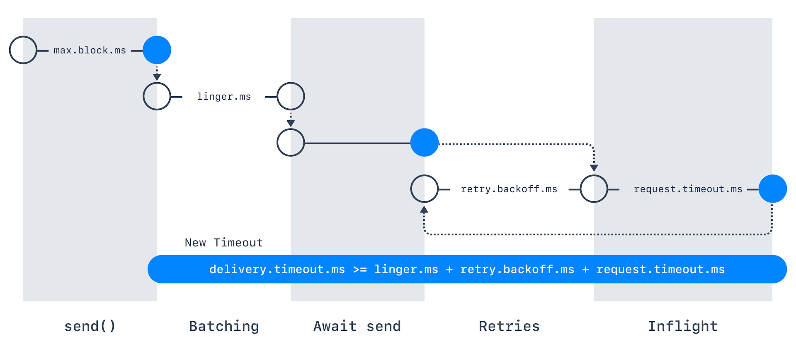

1. Introduction
2. In Short
//create safe producer
properties.setProperty(ProducerConfig.ENABLE_IDEMPOTENCE_CONFIG,"true");
properties.setProperty(ProducerConfig.ACKS_CONFIG,"all");
properties.setProperty(ProducerConfig.RETRIES_CONFIG,Integer.toString(Integer.MAX_VALUE));
properties.setProperty(ProducerConfig.MAX_IN_FLIGHT_REQUESTS_PER_CONNECTION, "5");3. retries
-
重试设置确定生产者在将消息标记为失败前尝试发送消息的次数；
-
Kafka >= 2.1，默认MAX_INT，否则为0；
-
用户通常更应该使用delivery.timeout.ms来控制重试行为；
4. delivery.timeout.ms
-
若重试次数大于0，如retries = 2147483647，生产者不会永远尝试该请求，
它会受到超时限制，如设置超时2分钟：delivery.timeout.ms=120000； -
若在delivery.timeout.ms内无法deliver record，则记录失败；

6. In Flight
-
max.in.flight.requests.per.connection
-
允许重试而不将max.in.flight.requests.per.connection设置为1；
-
设置为1可能会更改记录的顺序，因若将两个批次发送到单个分区，且第一个批次
失败并重试，但第二个批次成功，则记录在第二批次中可能会首先出现； -
若rely on key-based ordering，可能是个问题，
通过将正在进行的请求数量限制为1(默认5)，即： -
max.in.flight.requests.per.connection = 1，
我们可保证当某些消息需多次重试才能成功确认acknowledge时，Kafka将保留消息顺序；
|